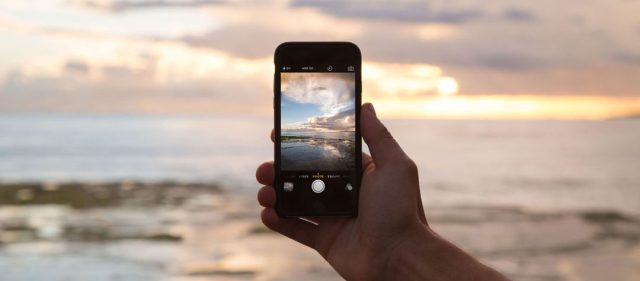
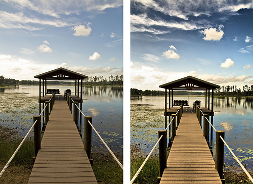
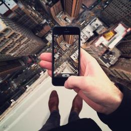
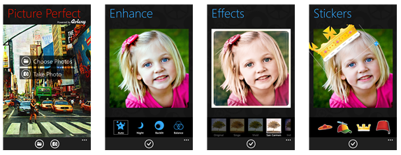
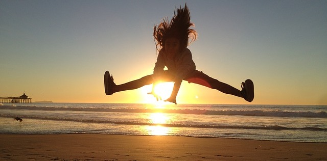

Fototips for nybegyndere: Sådan tager du gode billeder med din mobil
I dag behøver du ikke at have en spejlrefleks kamera for at tage gode billeder. Kameraet i moderne telefoner er næsten lige så godt som i et spejlrefleks kamera. Men der kræves stadigvæk at du tænker som en fotograf. Her får du 5 tips om hvordan du tage gode billeder med din telefon!
Fredag 29 september 2017, kl. 11:22
Af: Kateryna Mylokosta
1. Find ud af hvad din mobil kan
Det er ligegyldig om du har den nyeste iPhone eller en gammel Android telefon, det vigtigste er at du starter med at finde ud af hvad den kan. Gå ind i indstillinger og kigge i gennem alle de ”kedelige” indstillinger på din telefon. Prøv af de forskellige ting og sammenlign resultatet.  Alle telefoner har forskellige indstillinger, men der er nogle indstillinger som findes i alle telefoner. For eksempel – HDR (High Dynamic Range). Når du tager et HDR billede med din telefon, har du i virkeligheden taget flere end et billede. Og dette er fordi et HDR billede er sammensat af forskellige billeder taget ved forskellige eksponeringer. Så billedet du ser, har altså flere sammensat detaljer: billedet få mere lys, de mørke steder på billedet bliver endnu mørkere og generelt ser du mange flere detaljer.
2. Find det rette og spændende perspektiv
Det er meget nemt at tage et billede af din kat eller dit hus, men du skal være sikkert på at det er et godt billede og for at få det, skal du finde det rette perspektiv.  Du skal ikke være bange at gå tæt på personen, sæt dig ned på jorden, løbe rund, stå op på noget… Du skal prøve at ramme motiverne. Lad være med at zoome – bevæg dig rundt! Står ikke stille og du får sikkert et godt resultat!
3. Tage mange billeder
Du lærer også hurtigere og få større chance for at få det bedste billede. Husk: lad være med at slette billeder før du kommer hjem og ser dem på computer eller tablet. Kigge gennem alle billeder først, sorter og vælg de alle bedste.
4. Lær at redigere billeder
Der er en stor forskel på et billede med rettet horisonten og gode farver, men du behøver ikke at være prof i Photoshop for at få et godt billede. Du kan få mange gratis redigeringsprogrammer på din mobil. Husk: du skal passe på med at bruge for mange filtrer, du skal ikke miste billedets motivet.
5. Hav det sjovt
Du skal være motiveret for at få gode resultater. Glem alle reglerne og skyd løs! Vær ikke bange at tage billeder foran mange mennesker, vær kreativ og husk at have det sjovt!